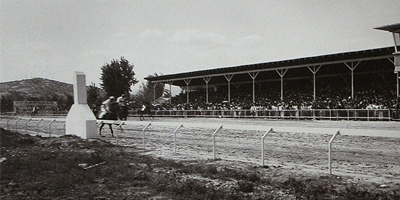
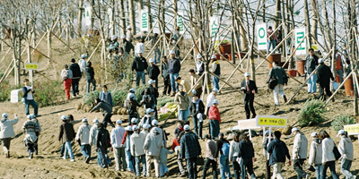
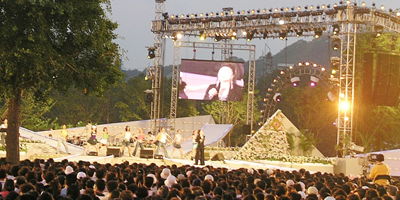
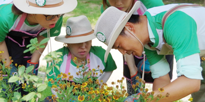
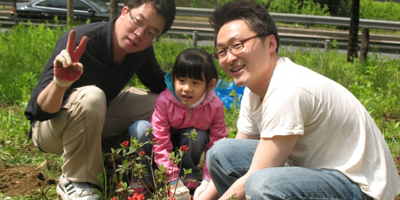
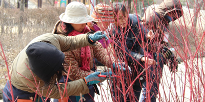

뚝섬경마장이었던 서울숲
서울숲이 있던 자리는 조선시대엔 관마(官馬)의 목마장과 군대의 열무장(閱武場)이었습니다. 1954년부터 이곳엔 경마장이 들어서, 뚝섬한강공원과 함께 이 일대를 유원지화 하는데 큰 역할을 했습니다. 경마장은 이후 경기도 과천으로 옮겨졌습니다.

시민들의 힘으로 공원을 조성하다
서울숲은 조성과정에서부터 시민이 참여하였을 뿐만 아니라 프로그램 운영까지 하고 있는 국내 최초의 공원입니다.
서울그린트러스트는 2003년부터 2005년까지 5,000여명의 시민과 70여개 기업과 50억원의 기금을 모아 서울숲 조성에 함께하였습니다.
또한 후원자들은 서울숲 운영에도 지속적인 기금과 자원봉사로 직접 참여하고 있습니다.

2005년, 서울숲공원의 탄생
서울그린트러스트의 서울숲운영팀 ‘서울숲사랑모임’은 서울숲이 개장한 2005년 5월에 발족하여 10여 년 동안 서울숲 공원의 참여·교육 프로그램을 운영해왔습니다. 생태프로그램, 도시정원사, 커뮤니티가든, 서울숲학교, 숲속작은도서관 등은 오랜 시간 동안 시민들의 사랑을 받아온 프로그램입니다.

청소년과 청년의 대안, 서울숲
서울숲은 2010년부터 시작된 청소년리더십프로그램을 중심으로 청소년이 또래들과 함께 희망을 찾고 꿈을 공유하며 자아를 발견하는 학교 밖의 학교, Outdoor School이 되었습니다.
2010년 30명으로 시작, 2013년 3,000여명의 청소년이 서울숲, 서울그린트러스트와 함께 성장했습니다. 4,800여명의 청년들이 인턴십과 실습, 단기고용, 자원 봉사 기회를 거쳐 녹색을 통한 새로운 일자리를 경험하게 되었습니다.

봉사활동의 메카, 서울숲
서울숲은 2005년 15명의 자원봉사자로 시작해 매년 9,000명의
자원봉사자가 활동하는 자원봉사의 메카가 되었습니다.
지난 10년간 50,637명의 시민이 도시숲 가꾸기 자원봉사에 참여했습니다.

기회의 장, 서울숲
도시공원은 시니어와 주부, 은퇴자에게 건강한 인생2막을 열어줍니다. 건강한 생태적 여가와 전 세대와 소통할 수 있는 기회를 줌으로써 멋진 시니어들이 배출되었습니다.
지난 10년간 3백 명의 도시숲리더가 배출되었으며, 15,475명의 생태 전문 해설가가 서울의 곳곳에 녹색에너지를 전달했습니다.